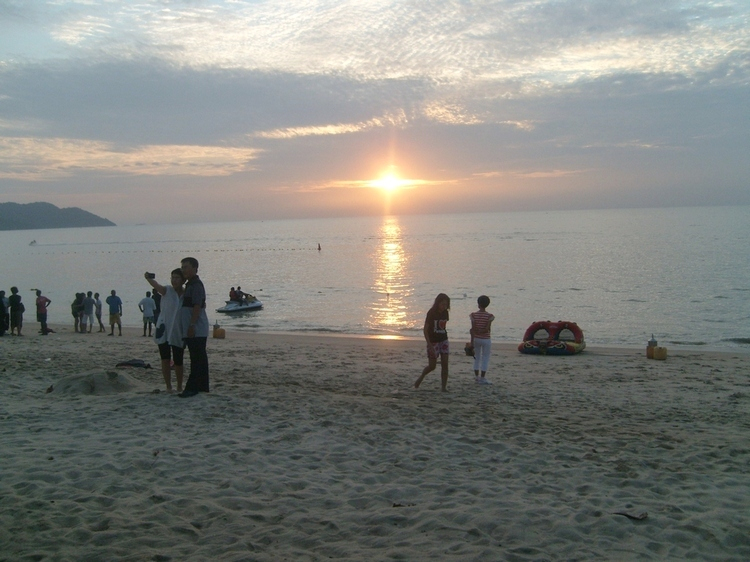
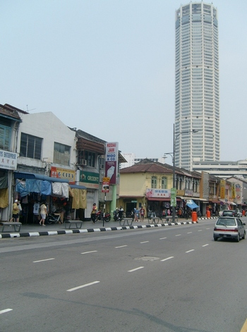
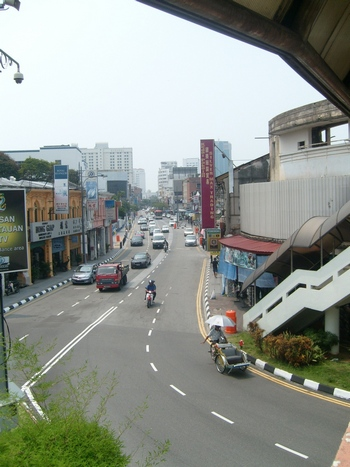
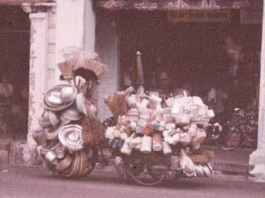
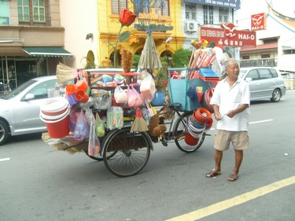
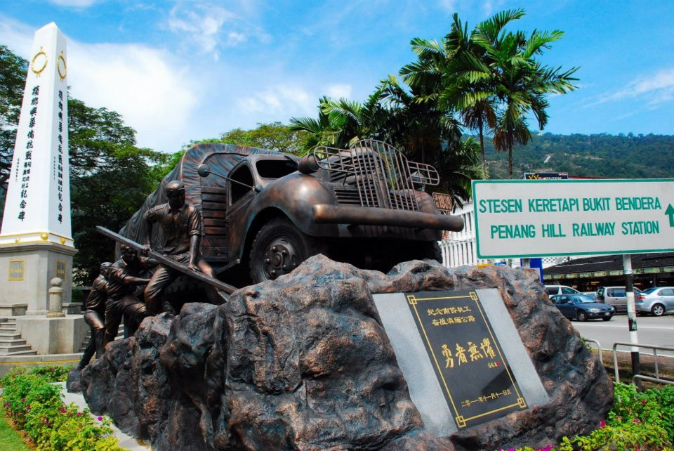

Focus on Malaysia | Side trip to Singapore
Visiting Penang/Pulau Pinang (2)
The Batu Ferringhi beach is one of the most interesting places to visit in Penang. Don't miss the night market along the main road selling all kinds of articles imaginable and stretching over 1km long. You can arrange to have your dinner at the restaurants or food courts behind the pasar market (night market) there. The more adventurous can spend the morning or afternoon hiking or boating from Teluk Bahang (which is just after Batu Ferringhi) near the entrance to the Penang National Park. There are motorboats there waiting to take you to some of the lesser-known islands such as Muka Head (also known as Monkey Beach). However be wary of jellyfish if you are tempted to swim in Batu Ferringhi. To be on the safe side swim where you find lots of people.
| Sunset from Batu Ferringhi beach, Penang |
|---|
 The sunset is always a sight to behold from Penang's Batu Ferringhi beach. |
Join a half-day round-island excursion trip. This is a must on your Penang visit. This trip normally makes a few stops on the way - for a rubber-tapping demonstration, to a batik factory and butterfly farm, and especially to the world-famous Snake Temple near Bayan Lepas. Don't be afraid to have a souvenir photo taken with one or two snakes coiled round your arm or neck as they are quite harmless (some believe it's because they are "drugged" by the burning incense in the temple).
When in Penang you must not miss eating the famous cendol (photo on right)
 |
Penang is famous for the abundance of its street foodstalls both day and night. Some swear that the humble street foodstall serves even better-quality food than the posh restaurants in four-star hotels. A good place for hawker food in Penang at night is the huge open-air food court at Gurney Drive. As it is also an esplanade , you can have a nice stroll and enjoy the sea breeze either before eating to whet up the appetite or after to help with the digestion of all that you have eaten! Be aware, however, that when Penangites mention the word Esplanade, they are more often than not referring to the old esplanade (Padang Kota Lama in Malay) which is where the historic Fort Cornwalis is (picture here).
But although Penang is famous for its hawker (street) food, there are certain dishes, such as Inchee Kabin (crispily-fried chicken pieces as seen in the photo above) or Ayam Kapitan that you can only find in restaurants, especially the ones along Tanjung Bungah and Batu Ferringhi such as the decades-old Hollywood Restaurant (you cannot find the Inchee Kabin in all restaurants).
Another restaurant where you can find excellent Chinese cuisine is the Chinese Recreation Club Restaurant. You can find full details and address (as well as photos of some tempting dishes) by CK Lam, one of Penang's top food reviewers, here.
And if you want more addresses, here are "10 of the best cheap eats in Penang".
| Penang Road - the very heart of George Town | |
|---|---|
 The 65-storey Komtar building at one end of Penang Road is the most important landmark in Penang. |  An early morning view of Penang Road from the overhead bridge that divides the road into two parts. |
{kind=link}
{kind=link}
| Some things never change in Penang! Something old... | |
|---|---|
 Peddling household goods on a tricycle in the fifties |  ...and today (picture taken on 5 July 2011) along Burmah Road. |
{kind=link}
| ...something new |
|---|
 This memorial park in Air Hitam was launched on 11 November, 2011 by Penang's Chief Minister. (Photo source: http://www.littlepenang.com) |